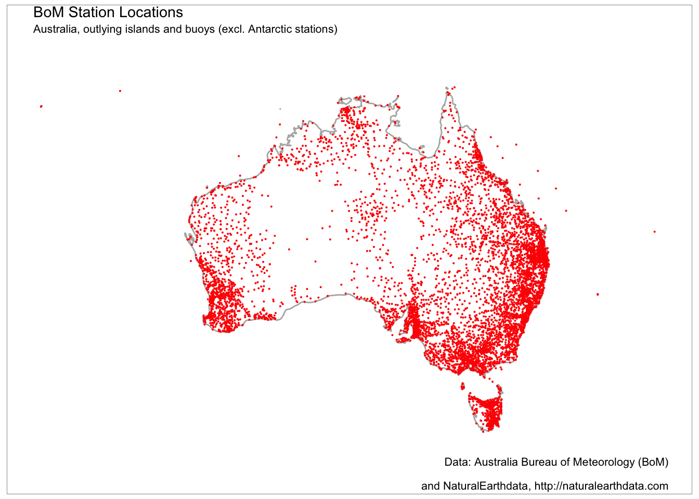

bomrang provides functions for interacting with Australian Bureau of Meteorology (BoM) Weather Data Services forecasts. BoM serves several types of data data as XML, JSON and SHTML files. This package fetches these files, parses them and return a tidy data frame. Satellite imagery files are also made available to the public via anonymous ftp. bomrang provides functionality to query, fetch and create raster::stack() objects of the GeoTIFF imagery.
Several functions are provided by bomrang to retrieve Australian Bureau of Meteorology (BoM) data. A family of functions retrieve weather data and return tidy data frames; get_precis_forecast(), which retrieves the précis (short) forecast; get_current_weather(), which fetches the current weather from a given station; get_ag_bulletin(), which retrieves the agriculture bulletin; and get_weather_bulletin() which fetches the 0900 and 1500 weather bulletins. A second family of functions retrieve information pertaining to satellite imagery, get_available_imagery() and the imagery itself, get_satellite_imagery(). The last group functions provides internal functionality for bomrang itself; update_forecast_towns(), which updates an internal database of forecast locations distributed with the package, sweep_for_stations() which returns the nearest weather stations to a point in Australia and, manage_cache() that provides facilities for managing cached satellite imagery.
get_current_weather
get_current_weather() takes one of two arguments: station_name and latlon, returning the current weather observations (and the observations of the last 72 hours) for the given location.
If station_name is used, the weather observations for the last 72 hours are returned for that station. If the string provided is ambiguous, the function returns an observation for one of the possible stations and emits a warning to offer unambiguous station names.
If latlon is used, the observations returned are from the station nearest to that latitude-longitude coordinate. latlon values are entered as decimal degrees, e.g. -34, 151 for Sydney. The function also emits a message, to tell the user which station was used.
Following is an example fetching the current weather for Melbourne.
##
## Data (c) Australian Government Bureau of Meteorology,
## Creative Commons (CC) Attribution 3.0 licence or
## Public Access Licence (PAL) as appropriate.
## See http://www.bom.gov.au/other/copyright.shtml## sort_order wmo full_name history_product
## 1 0 95936 Melbourne (Olympic Park) IDV60801
## 2 1 95936 Melbourne (Olympic Park) IDV60801
## 3 2 95936 Melbourne (Olympic Park) IDV60801
## 4 3 95936 Melbourne (Olympic Park) IDV60801
## 5 4 95936 Melbourne (Olympic Park) IDV60801
## 6 5 95936 Melbourne (Olympic Park) IDV60801
## local_date_time local_date_time_full aifstime_utc lat
## 1 18/12:30pm 2017-12-18 12:30:00 2017-12-18 01:30:00 -37.8255
## 2 18/12:00pm 2017-12-18 12:00:00 2017-12-18 01:00:00 -37.8255
## 3 18/11:30am 2017-12-18 11:30:00 2017-12-18 00:30:00 -37.8255
## 4 18/11:00am 2017-12-18 11:00:00 2017-12-18 00:00:00 -37.8255
## 5 18/10:30am 2017-12-18 10:30:00 2017-12-17 23:30:00 -37.8255
## 6 18/10:00am 2017-12-18 10:00:00 2017-12-17 23:00:00 -37.8255
## lon apparent_t cloud cloud_base_m cloud_oktas cloud_type
## 1 144.9816 28.4 - NA NA -
## 2 144.9816 27.5 - NA NA -
## 3 144.9816 28.4 - NA NA -
## 4 144.9816 26.4 - NA NA -
## 5 144.9816 26.2 - NA NA -
## 6 144.9816 25.0 - NA NA -
## cloud_type_id delta_t gust_kmh gust_kt air_temp dewpt press press_msl
## 1 NA 9.9 9 5 29.1 12.1 1010.0 1010.0
## 2 NA 8.5 11 6 27.6 13.2 1010.3 1010.3
## 3 NA 6.1 7 4 26.5 16.7 1010.7 1010.7
## 4 NA 5.5 7 4 24.9 15.8 1011.2 1011.2
## 5 NA 4.6 4 2 24.0 16.5 1011.3 1011.3
## 6 NA 3.8 4 2 22.8 16.6 1011.6 1011.6
## press_qnh press_tend rain_trace rel_hum sea_state swell_dir_worded
## 1 1010.0 - 0 35 - -
## 2 1010.3 - 0 41 - -
## 3 1010.7 - 0 55 - -
## 4 1011.2 - 0 57 - -
## 5 1011.3 - 0 63 - -
## 6 1011.6 - 0 68 - -
## swell_height swell_period vis_km weather wind_dir wind_spd_kmh
## 1 NA NA 10 - NNW 7
## 2 NA NA 10 - ENE 6
## 3 NA NA 10 - N 2
## 4 NA NA 10 - NW 2
## 5 NA NA 10 - CALM 0
## 6 NA NA 10 - CALM 0
## wind_spd_kt
## 1 4
## 2 3
## 3 1
## 4 1
## 5 0
## 6 0get_precis_forecast
This function only takes one argument, state. The state parameter allows the user to select the forecast for just one state or a national forecast. States or territories are specified using the official postal codes or full name with fuzzy matching performed via agrep()
ACT - Australian Capital Territory
NSW - New South Wales
NT - Northern Territory
QLD - Queensland
SA - South Australia
TAS - Tasmania
VIC - Victoria
WA - Western Australia
AUS - Australia, returns national forecast including all states, NT and ACT.
The function, get_precis_forecast(), will return a data frame of the weather forecast for the daily forecast for selected towns. See Appendix 1 for a full description of the fields and values.
Following is an example fetching the forecast for Queensland.
## index product_id state town aac lat lon elev
## 1 0 IDQ11295 QLD Brisbane QLD_PT001 -27.4808 153.0389 8.1
## 2 1 IDQ11295 QLD Brisbane QLD_PT001 -27.4808 153.0389 8.1
## 3 2 IDQ11295 QLD Brisbane QLD_PT001 -27.4808 153.0389 8.1
## 4 3 IDQ11295 QLD Brisbane QLD_PT001 -27.4808 153.0389 8.1
## 5 4 IDQ11295 QLD Brisbane QLD_PT001 -27.4808 153.0389 8.1
## 6 5 IDQ11295 QLD Brisbane QLD_PT001 -27.4808 153.0389 8.1
## start_time_local end_time_local UTC_offset start_time_utc
## 1 2017-12-18 05:00:00 2017-12-19 10:00 2017-12-17 19:00:00
## 2 2017-12-19 00:00:00 2017-12-20 10:00 2017-12-18 14:00:00
## 3 2017-12-20 00:00:00 2017-12-21 10:00 2017-12-19 14:00:00
## 4 2017-12-21 00:00:00 2017-12-22 10:00 2017-12-20 14:00:00
## 5 2017-12-22 00:00:00 2017-12-23 10:00 2017-12-21 14:00:00
## 6 2017-12-23 00:00:00 2017-12-24 10:00 2017-12-22 14:00:00
## end_time_utc minimum_temperature maximum_temperature
## 1 2017-12-18 14:00:00 NA 30
## 2 2017-12-19 14:00:00 20 33
## 3 2017-12-20 14:00:00 22 33
## 4 2017-12-21 14:00:00 22 32
## 5 2017-12-22 14:00:00 22 31
## 6 2017-12-23 14:00:00 22 31
## lower_precipitation_limit upper_precipitation_limit precis
## 1 NA NA Cloud clearing.
## 2 NA NA Mostly sunny.
## 3 NA NA Mostly sunny.
## 4 NA NA Partly cloudy.
## 5 0 4 Shower or two.
## 6 0 2 Possible shower.
## probability_of_precipitation
## 1 30
## 2 33
## 3 33
## 4 32
## 5 31
## 6 31get_ag_bulletin
get_ag_bulletin() only takes one argument, state. The state parameter allows the user to select the bulletin for just one state or a national forecast. States or territories are specified using the official postal codes or full name with fuzzy matching performed via agrep().
NSW - New South Wales
NT - Northern Territory
QLD - Queensland
SA - South Australia
TAS - Tasmania
VIC - Victoria
WA - Western Australia
AUS - Australia, returns bulletin for all states and NT.
The function, get_ag_bulletin(), will return a data frame of the agriculture bulletin for selected stations. See Appendix 3 for a full list and description of the fields and values.
Following is an example fetching the ag bulletin for Queensland.
## product_id state dist wmo site station full_name
## 1 IDQ60604 QLD 38 95482 38026 Birdsville BIRDSVILLE AIRPORT
## 2 IDQ60604 QLD 38 94333 38003 Boulia BOULIA AIRPORT
## 3 IDQ60604 QLD 40 94578 40842 Brisbane Airport BRISBANE AERO
## 4 IDQ60604 QLD 39 94387 39128 Bundaberg BUNDABERG AERO
## 5 IDQ60604 QLD 31 94287 31011 Cairns CAIRNS AERO
## 6 IDQ60604 QLD 44 94510 44021 Charleville CHARLEVILLE AERO
## obs_time_local obs_time_utc
## 1 2017-12-18 09:00:00 2017-12-17 23:00:00
## 2 2017-12-18 09:00:00 2017-12-17 23:00:00
## 3 2017-12-18 09:00:00 2017-12-17 23:00:00
## 4 2017-12-18 09:00:00 2017-12-17 23:00:00
## 5 2017-12-18 09:00:00 2017-12-17 23:00:00
## 6 2017-12-18 09:00:00 2017-12-17 23:00:00
## time_zone
## 1 c(1, 1, 1, 1, 1, 1, 1, 1, 1, 1, 1, 1, 1, 1, 1, 1, 1, 1, 1, 1, 1, 1, 1, 1, 1, 1, 1)
## 2 c(1, 1, 1, 1, 1, 1, 1, 1, 1, 1, 1, 1, 1, 1, 1, 1, 1, 1, 1, 1, 1, 1, 1, 1, 1, 1, 1)
## 3 c(1, 1, 1, 1, 1, 1, 1, 1, 1, 1, 1, 1, 1, 1, 1, 1, 1, 1, 1, 1, 1, 1, 1, 1, 1, 1, 1)
## 4 c(1, 1, 1, 1, 1, 1, 1, 1, 1, 1, 1, 1, 1, 1, 1, 1, 1, 1, 1, 1, 1, 1, 1, 1, 1, 1, 1)
## 5 c(1, 1, 1, 1, 1, 1, 1, 1, 1, 1, 1, 1, 1, 1, 1, 1, 1, 1, 1, 1, 1, 1, 1, 1, 1, 1, 1)
## 6 c(1, 1, 1, 1, 1, 1, 1, 1, 1, 1, 1, 1, 1, 1, 1, 1, 1, 1, 1, 1, 1, 1, 1, 1, 1, 1, 1)
## lat lon elev bar_ht start end r tn tx twd ev tg
## 1 -25.8975 139.3472 46.6 47.0 2000 2017 0.0 31.5 44.9 18.8 NA NA
## 2 -22.9117 139.9039 161.8 158.3 1886 2017 0.0 28.9 42.9 11.5 23.0 25.6
## 3 -27.3917 153.1292 4.5 9.5 1992 2017 0.0 22.6 28.7 4.7 9.4 18.8
## 4 -24.9069 152.3230 30.8 31.5 1942 2017 0.0 19.2 30.8 6.1 NA NA
## 5 -16.8736 145.7458 2.2 8.3 1941 2017 1.8 23.6 33.5 5.5 NA NA
## 6 -26.4139 146.2558 301.6 303.3 1942 2017 4.2 26.5 40.8 11.1 NA NA
## sn t5 t10 t20 t50 t1m wr
## 1 NA NA NA NA NA NA NA
## 2 NA NA NA NA NA NA NA
## 3 11.8 31.0 29.0 28.0 28.0 26.0 211
## 4 NA 27.5 27.7 28.2 27.8 26.9 NA
## 5 NA NA NA NA NA NA NA
## 6 NA NA NA NA NA NA NAget_weather_bulletin
This function takes two arguments, state for the desired state; and morning if TRUE, return the 9am bulletin for the nominated state; otherwise return the 3pm bulletin. States or territories are specified using the official postal codes.
ACT Australian Capital Territory (will return NSW)
NSW - New South Wales
NT - Northern Territory
QLD - Queensland
SA - South Australia
TAS - Tasmania
VIC - Victoria
WA - Western Australia
The function get_weather_bulletin() will return a tidy data frame of BoM data for the requested state(s) or territory.
Following is an example fetching the 3PM bulletin for Queensland.
## stations cld8ths wind_dir wind_speed_kmh temp_c_dry temp_c_dew
## 1 Coconut Is NA SE 4 31 NA
## 2 Coen Ap NA ESE 11 30 19
## 3 Horn Is 3 SSE 17 30 24
## 4 Lockhart River 6 ESE 20 30 23
## 5 Palmerville NA ESE 6 29 18
## 6 Scherger NA SSE 9 28 22
## temp_c_max temp_c_min temp_c_gr barhpa rain_mm weather seastate
## 1 35 26 NA 1009 NA
## 2 36 23 NA 1009 NA
## 3 33 26 NA 1010 0.4
## 4 33 22 NA 1010 NA
## 5 38 21 NA 1010 NA
## 6 35 23 NA 1010 7.0sweep_for_stations
sweep_for_stations() only takes one argument, latlon, a length-2 numeric vector. By default, Canberra (approximately).
This function will search for weather stations and return a data frame of all weather stations (in this package) sorted by distance from latlon, ascending. The fields in the data frame are:
name - station name
lat - latitude (decimal degrees)
lon - longitude (decimal degrees)
distance - distance from provided latlon value (kilometres).
Following is an example sweeping for stations starting with Canberra.
# Show only the first ten stations in the list
head(sweep_for_stations(latlon = c(-35.3, 149.2)), 10)## site dist name start end lat
## 1 070351 70 CANBERRA AIRPORT 2008 2017 -35.3088
## 2 070339 70 TUGGERANONG (ISABELLA PLAINS) AWS 1996 2017 -35.4184
## 3 070349 70 MOUNT GININI AWS 2004 2017 -35.5293
## 4 070341 70 CAPTAINS FLAT (COWANGERONG RADAR) 2002 2017 -35.6614
## 5 069132 69 BRAIDWOOD RACECOURSE AWS 1985 2017 -35.4253
## 6 070358 70 YASS (RURAL FIRE SERVICE) 2011 2017 -34.8225
## 7 073007 73 BURRINJUCK DAM 1908 2017 -34.9997
## 8 070330 70 GOULBURN AIRPORT AWS 1988 2017 -34.8085
## 9 070263 70 GOULBURN TAFE 1971 2017 -34.7495
## 10 069128 69 NERRIGA AWS 2013 2017 -35.1103
## lon source state elev bar_ht wmo state_code
## 1 149.2004 GPS NSW 577.1 577.6 94926 N
## 2 149.0937 GPS NSW 586.7 587.5 94925 N
## 3 148.7721 GPS NSW 1760.0 NA 95925 N
## 4 149.5122 GPS NSW 1358.0 NA 99089 N
## 5 149.7835 GPS NSW 665.2 666.0 94927 N
## 6 148.9080 GPS NSW 498.0 NA 95723 N
## 7 148.5984 GPS NSW 390.0 NA 94909 N
## 8 149.7311 GPS NSW 640.0 640.8 95716 N
## 9 149.7034 GPS NSW 670.0 NA 94716 N
## 10 150.0826 GPS NSW 622.0 625.6 94943 N
## url distance
## 1 http://www.bom.gov.au/fwo/IDN60801/IDN60801.94926.json 0.9791884
## 2 http://www.bom.gov.au/fwo/IDN60801/IDN60801.94925.json 16.3172787
## 3 http://www.bom.gov.au/fwo/IDN60801/IDN60801.95925.json 46.4084466
## 4 http://www.bom.gov.au/fwo/IDN60801/IDN60801.99089.json 49.1327086
## 5 http://www.bom.gov.au/fwo/IDN60801/IDN60801.94927.json 54.7153470
## 6 http://www.bom.gov.au/fwo/IDN60801/IDN60801.95723.json 59.3756657
## 7 http://www.bom.gov.au/fwo/IDN60801/IDN60801.94909.json 64.0835316
## 8 http://www.bom.gov.au/fwo/IDN60801/IDN60801.95716.json 72.9652110
## 9 http://www.bom.gov.au/fwo/IDN60801/IDN60801.94716.json 76.4731323
## 10 http://www.bom.gov.au/fwo/IDN60801/IDN60801.94943.json 82.9176026bomrang uses internal databases of station location data from BoM to provide location and other metadata, e.g. elevation, station names, WMO codes, etc. to make the process of querying for weather data faster. These databases are created and packaged with bomrang for distribution and are updated with new releases. Users have the option of updating these databases after installing bomrang. While this option gives the users the ability to keep the databases up-to-date and gives bomrang’s authors flexibility in maintaining it, this also means that reproducibility may be affected since the same version of bomrang may have different databases on different machines. If reproducibility is necessary, care should be taken to ensure that the version of the databases is the same across different machines.
The databases consist of three files, used by bomrang, AAC_codes.rda, JSONurl_latlon_by_station_name.rda and stations_site_list.rda. These files can be located on your local system by using the following command,
unless you have specified another location for library installations and installed bomrang there, in which case it would still be in bomrang/extdata.
update_forecast_towns
update_forecast_towns() downloads the latest précis forecast locations from the BoM server and updates bomrang’s internal database of towns used for forecast locations. This database is distributed with the package to make the process faster when fetching the forecast.
update_station_locations
update_station_locations() downloads the latest station locations and metadata and updates bomrang’s internal databases that support the use of get_current_weather() and get_ag_bulletin(). There is no need to use this unless you know that a station exists in BoM’s database that is not available in the databases distributed with bomrang
bomrang provides functionality to retrieve high-definition GeoTIFF satellite imagery provided by BoM through public FTP with the following types of imagery being available: i.) Infrared images, ii.) Visible images and iii.) Clouds/surface composite.
Valid BoM satellite Product IDs for GeoTIFF files include:
| Product ID | Description | Type | Delete time |
|---|---|---|---|
| IDE00420 | AHI cloud cover only 2km FD GEOS | Satellite | 24 |
| IDE00421 | AHI IR (Ch13) greyscale 2km FD GEOS | Satellite | 24 |
| IDE00422 | AHI VIS (Ch3) greyscale 2km FD GEOS | Satellite | 24 |
| IDE00423 | AHI IR (Ch13) Zehr 2km FD GEOS | Satellite | 24 |
| IDE00425 | AHI VIS (true colour) / IR (Ch13 greyscale) composite 1km FD GEOS | Satellite | 24 |
| IDE00426 | AHI VIS (true colour) / IR (Ch13 greyscale) composite 2km FD GEOS | Satellite | 24 |
| IDE00427 | AHI WV (Ch8) 2km FD GEOS | Satellite | 24 |
| IDE00430 | AHI cloud cover only 2km AUS equirect. | Satellite | 24 |
| IDE00431 | AHI IR (Ch13) greyscale 2km AUS equirect. | Satellite | 24 |
| IDE00432 | AHI VIS (Ch3) greyscale 2km AUS equirect. | Satellite | 24 |
| IDE00433 | AHI IR (Ch13) Zehr 2km AUS equirect. | Satellite | 24 |
| IDE00435 | AHI VIS (true colour) / IR (Ch13 greyscale) composite 1km AUS equirect. | Satellite | 24 |
| IDE00436 | AHI VIS (true colour) / IR (Ch13 greyscale) composite 2km AUS equirect. | Satellite | 24 |
| IDE00437 | AHI WV (Ch8) 2km AUS equirect. | Satellite | 24 |
| IDE00439 | AHI VIS (Ch3) greyscale 0.5km AUS equirect. | Satellite | 24 |
| Information gathered from Australian Bureau of Meteorology (BoM) | |||
get_available_imagery
get_available_imagery() only takes one argument, product_id, a BoM identifier for the imagery that you wish to check for available imagery. Using this function will fetch a listing of BoM GeoTIFF satellite imagery from ftp://ftp.bom.gov.au/anon/gen/gms/ to display which files are currently available for download. These files are available at ten minute update frequency with a 24 hour delete time. This function can be used see the most recent files available and then specify in the get_satellite_imagery() function. If no valid Product ID is supplied, defaults to all GeoTIFF images currently available.
get_satellite_imagery
get_satellite_imagery() fetches BoM satellite GeoTIFF imagery, returning a raster stack object and takes three arguments. Files are available at ten minute update frequency with a 24 hour delete time. It is suggested to check file availability first by using get_available_imagery(). The arguments are:
product_id, a character value of the BoM product ID to download. Alternatively, a vector of values from get_available_imagery() may be used here. This argument is mandatory.
scans a numeric value for the number of scans to download, starting with the most recent and progressing backwards, e.g., 1 - the most recent single scan available , 6 - the most recent hour available, 12 - the most recent 2 hours available, etc. Negating will return the oldest files first. Defaults to 1. This argument is optional.
cache a logical value that indicates whether or not to store image files locally for later use? If FALSE, the downloaded files are removed when R session is closed. To take advantage of cached files in future sessions, set TRUE. Defaults to FALSE. This argument is optional. Cached files may be managed with the manage_cache() function.
# Specify product ID and scans
i <- get_satellite_imagery(product_id = "IDE00425", scans = 1)
# Same, but use "avail" from prior to specify images for download
i <- get_satellite_imagery(product_id = avail, scans = 1)
# Cache image for later use
i <- get_satellite_imagery(product_id = avail, scans = 1, cache = TRUE)
# load the raster library to work with the GeoTIFF files
library(raster)
plot(i)get_satellite_imagery-1.png
If you elect to use cache = TRUE when downloading imagery, note that the GTiff files can be quite large and will fill disk space. By using the default cache = FALSE the files will be deleted when the current R session is closed.
Should you chose to use caching, bomrang provided functions to interact with the cached files:
List files in the cache, manage_cache$list()
List info for single files,
manage_cache$list()[1])
manage_cache$list()[2])
List info for all files, manage_cache$details()
Delete files by name in cache, manage_cache$delete()
Delete all files in cache, manage_cache$delete_all()
To access the files directly, outside of R, the following command will give you the location of the directory:
manage_cache$cache_path_get()
Australian Bureau of Meteorology (BoM) Weather Data Services
Australian Bureau of Meteorology (BoM) FTP Public Products
Australian Bureau of Meteorology (BoM) Weather Data Services Agriculture Bulletins
Australian Bureau of Meteorology (BoM) Weather Data Services Observation of Rainfall
Australian Bureau of Meteorology (BoM) High-definition satellite images
get_current_weather
The function get_current_weather() will return a data frame that will contain some or all of the following fields.
| Field Name | Description |
|---|---|
| wmo_id | wmo station index number, uniquely identifies station |
| Name[31] | Observing station name |
| Abbr[6] | An abbreviated name (normally 4 characters) used for the station |
| Date | Date, Year (4 digits), month (2 digits), day (2 digits) |
| Time | Time, Hours (2 digits), minutes (2 digits), UTC |
| Lat | Latitude, decimal degrees, S -ve, N +ve |
| Lon | Longitude, decimal degrees, E +ve, W -ve |
| Stn_typ | Station type |
| Stn_ht_m | Station height (in metres) |
| Total_cld | Total cloud cover in oktas, 9=Sky Obscured by smoke, fog, … |
| Wdir | Wind direction, degrees true |
| Wspd_mps | Wind speed, metres per second |
| Vis_m | Visibility, metres |
| Wx[9] | Present weather, abbreviated |
| Pw1 | Past weather (last 3-6 hours), see below |
| Pw2 | Past weather (Used so more than one variation can be reported) |
| Msl_P | Mean Sea Level Pressure, hPa |
| Stn_P | Station level pressure, hPa |
| P_tend_typ | Type of the pressure tendency, numerical code, see below |
| P_tend_val | Pressure tendency (change) in last 3 hours, hPa |
| Cor_P_tend | Pressure tendency in last 3 hours corrected for diurnal variation |
| T_DB | Temperature (dry bulb), degrees C |
| DP | Dew point, degrees C |
| Low_cld_amt | Amount of low cloud, oktas, 9=Sky obscured by fog, smoke, … |
| Low_cld_typ[4] | Type of low cloud, abbreviation |
| Cld_base_m | Base of lowest cloud, m |
| Cld_dir[4] | Direction of motion of low cloud, compass point |
| Mid_cld_typ[4] | Type of middle level cloud, abbreviation |
| Hi_cld_typ[4] | Type of high cloud, abbreviation |
| Rf_int_h6 | Interval for which rain is reported in next field, hours |
| Rainfall6 | Rainfall, mm, usually at 9 or 3 AM/PM |
| Rf_int_h4 | Interval for which rain is reported in next field, hours |
| Rainfall4 | Rainfall, mm, usually since last observation |
| Sea_state[5] | Sea state, abbreviation |
| Swl_state[9] | Swell state, abbreviation |
| Swl_dir[4] | Swell direction, abbreviation |
| Max_T | Maximum temperature, 24h to 9AM or 6h to 3PM local time, degree C |
| Min_T | Minimum temperature, 24h to 9AM local time, degree C |
| Min_grnd_T | Minimum ground temperature, 24 h to (AM local time, degree C |
| Snow_depth_m | Depth of snow on ground, metres |
| Low_cld_code | Code for low level cloud type, see below |
| Mid_cld_code | Code for middle level cloud type, see below |
| Hi_cld_code | Code for high level cloud type, see below |
| Max_T(Int) | Maximum temperature for international exchange |
| Min_T(Int) | Minimum temperature for international exchange |
| Plain_lang[51] | Plain language comments |
P_tend_typ:
This consists of a two or 3 digit code figure plus (when relevant) a short, text abbreviation of the weather The abbreviations used (frequently together, e.g., XXRA for heavy rain, FZDZ for freezing drizzle) include
Also, some other abbreviations used include
(This is a subset of a larger table, not all values of which are used) wmo international BUFR code table 0 20 003, CREX code table B 20 003
00 Clouds not observed
01 Cloud decreasing
02 State of sky generally unchanging
03 Cloud increasing
04 Smoke or volcanic ash
05 Haze
06 Widespread dust suspended in the air, not raised locally at the
time of observation
07 Dust or sand raised locally by the wind at the time of observation,
but no well developed dust devils, sandstorm, or duststorm
08 Well developed dust devils, but no sandstorm or duststorm
09 Duststorm or sandstorm
10 Mist
11 Patches of shallow fog
12 More or less continuous shallow fog
13 Lightning visible, but no thunder heard
14 Precipitation in sight, but not reaching the ground or sea (virga)
15 Precipitation in sight, reaching the ground, but more than 5km away
16 Precipitation in sight, reaching the ground, near but not at the
observing station
17 Thunderstorm without precipitation
18 Squalls
19 Funnel clouds (tornado, water spout)
20 Recent (within the last hour) drizzle
21 Recent (within the last hour) rain, but not freezing rain
22 Recent (within the last hour) snow
23 Recent (within the last hour) mixed rain and snow or ice pellets
24 Recent (within the last hour) freezing drizzle or freezing rain
25 Recent (within the last hour) showers of rain
26 Recent (within the last hour) showers of snow or mixed rain and snow
27 Recent (within the last hour) showers of hail or mixed rain and hail
28 Recent (within the last hour) Fog or ice fog
29 Recent (within the last hour) thunderstorm
30 Slight or moderate duststorm or sandstorm, has decreased in the
last hour
31 Slight or moderate duststorm or sandstorm, with no appreciable
change in the last hour
32 Slight or moderate duststorm or sandstorm, has begun or
increased in the last hour
33 Severe duststorm or sandstorm, has decreased in the last hour
34 Severe duststorm or sandstorm, with no appreciable change in the
last hour
35 Severe duststorm or sandstorm, has begun or increased in the
last hour
36 Slight or moderate drifting snow, generally below eye level
37 Heavy drifting snow, generally below eye level
38 Slight or moderate blowing snow, generally above eye level
39 Heavy blowing snow, generally above eye level
40 Fog or ice fog at a distance but not at the station
41 Patches of fog or ice fog
42 Fog or ice fog, sky visible, has become thinner in the last hour
43 Fog or ice fog, sky invisible, has become thinner in the last hour
44 Fog or ice fog, sky visible, no appreciable change in the last hour
45 Fog or ice fog, sky invisible, no appreciable change in the last
hour
46 Fog or ice fog, sky visible, has become thicker in the last hour
47 Fog or ice fog, sky invisible, has become thicker in the last hour
48 Fog, depositing rime (freezing fog), sky visible
49 Fog, depositing rime (freezing fog), sky invisible
50 Slight intermittent drizzle, not freezing
51 Continuous slight drizzle, not freezing
52 Moderate intermittent drizzle, not freezing
53 Continuous moderate drizzle, not freezing
54 Heavy intermittent drizzle, not freezing
55 Continuous heavy drizzle, not freezing
56 Slight freezing drizzle
57 Moderate or heavy freezing drizzle
58 Slight drizzle and rain (mixed)
59 Moderate or heavy drizzle and rain (mixed)
60 Slight intermittent rain, not freezing
61 Continuous slight rain, not freezing
62 Moderate intermittent rain, not freezing
63 Continuous moderate rain, not freezing
64 Heavy intermittent rain, not freezing
65 Continuous heavy rain, not freezing
66 Slight freezing rain
67 Moderate or heavy freezing rain
68 Slight rain and snow or drizzle and snow (mixed)
69 Moderate or heavy rain and snow or drizzle and snow (mixed)
70 Slight intermittent snow
71 Continuous slight snow
72 Moderate intermittent snow
73 Continuous moderate snow
74 Heavy intermittent snow
75 Continuous heavy snow
76 Diamond dust, with or without fog
77 Snow grains, with or without fog
78 Isolated star like ice crystals, with or without fog
79 Ice pellets
80 Slight rain showers or shower
81 Moderate or heavy rain shower or showers
82 Violent rain shower or showers
83 Slight shower or showers of mixed rain and snow
84 Moderate or heavy shower or showers of mixed rain and snow
85 Slight shower or showers of snow
86 Moderate or heavy shower or showers of snow
87 Slight shower or showers of snow pellets or small hail, with
or without rain or mixed rain and snow
88 Moderate or heavy shower or showers of snow pellets or small
hail, with or without rain or mixed rain and snow
89 Slight shower or showers of hail, with or without rain or
mixed rain and snow, but no thunder
90 Moderate or heavy shower or showers of hail, with or without
rain or mixed rain and snow, but no thunder
91 Slight rain now, with thunder during the last hour
92 Moderate or heavy rain now, with thunder during the last hour
93 Slight snow, mixed rain and snow, or hail now, with thunder
during the last hour
94 Moderate or heavy snow, mixed rain and snow, or hail now, with
thunder during the last hour
95 Slight or moderate thunderstorm with rain or snow but no hail
96 Slight or moderate thunderstorm with hail
97 Heavy thunderstorm with rain or snow but no hail
98 Thunderstorm combined with a sandstorm or duststorm
99 Heavy thunderstorm with hail
100 No significant weather
101 Cloud decreasing
102 State of sky generally unchanging
103 Cloud increasing
104 Haze or smoke or suspended dust, visibility >= 1km
105 Haze or smoke or suspended dust, visibility < 1km
110 Mist
111 Diamond dust
112 Distant lightning
118 Squalls
120 Recent (during the last hour) fog
121 Recent (during the last hour) precipitation
122 Recent (during the last hour) drizzle, not freezing, or snow grains
123 Recent (during the last hour) rain, not freezing
124 Recent (during the last hour) snow
125 Recent (during the last hour) freezing drizzle or freezing rain
126 Recent (during the last hour) thunderstorm
127 Blowing or drifting snow or sand
128 Blowing or drifting snow or sand, visibility >= 1km
129 Blowing or drifting snow or sand, visibility < 1km
130 Fog
131 Patches of fog or ice fog
132 Fog or ice fog, has become thinner in the last hour
133 Fog or ice fog, no appreciable change in the last hour
134 Fog or ice fog, has become thicker in the last hour
135 Fog, depositing rime (freezing fog)
140 Precipitation
141 Slight or moderate precipitation
142 Heavy precipitation
143 Slight or moderate liquid precipitation
144 Heavy liquid precipitation
145 Slight or moderate solid precipitation
146 Heavy solid precipitation
147 Slight or moderate freezing precipitation
148 Heavy freezing precipitation
150 Drizzle
151 Slight drizzle, not freezing
152 Moderate drizzle, not freezing
153 Heavy drizzle, not freezing
154 Slight freezing drizzle
155 Moderate freezing drizzle
156 Heavy freezing drizzle
157 Slight drizzle and rain
158 Moderate or heavy drizzle and rain
160 Rain
161 Slight rain, not freezing
162 Moderate rain, not freezing
163 Heavy rain, not freezing
164 Slight freezing rain
165 Moderate freezing rain
166 Heavy freezing rain
167 Slight rain and snow or drizzle and snow
168 Moderate or heavy rain and snow or drizzle and snow
170 Snow
171 Slight snow
172 Moderate snow
173 Heavy snow
174 Slight ice pellets
175 Moderate ice pellets
176 Heavy ice pellets
180 Shower or showers or intermittent precipitation
181 Slight rain shower or showers or slight intermittent rain
182 Moderate rain shower or showers or moderate intermittent rain
183 Heavy rain shower or showers or heavy intermittent rain
184 Violent rain shower or showers or violent intermittent rain
185 Slight snow shower or showers or slight intermittent snow
186 Moderate snow shower or showers or moderate intermittent snow
187 Heavy snow shower or showers or heavy intermittent snow
190 Thunderstorm
191 Slight or moderate thunderstorm without precipitation
192 Slight or moderate thunderstorm with rain showers and/or snow
showers
193 Slight or moderate thunderstorm with hail
194 Heavy thunderstorm without precipitation
195 Heavy thunderstorm with rain showers and/or snow showers
196 Heavy thunderstorm with hail
199 Tornado
508 No significant weather
509 Data not available
510 Data should have been reported but wasn't wmo international BUFR code table 0 20 004, CREX code table B 20 004
If only one type of weather has occurred in the last 3-6 hours,only Pw1 and Pw2 will be the same. If there has been more than one, Pw1 and Pw2 should be different, with Pw1 reflecting the “more important” past weather. Code figures 0-9 normally apply to manned stations, 10-19 to automated weather stations.
0 Cloud covering less than 1/2 the sky
1 Cloud covering more than 1/2 the sky part of the time
and less than 1/2 the sky part of the time
2 Cloud covering more than 1/2 the sky
3 Sandstorm, dustorm or blowing snow
4 Fog, ice fog, or thick haze
5 Drizzle
6 Rain
7 Snow, or mixed rain and snow
8 Showers
9 Thunderstorm
10 Nothing significant detected
11 Reduced visibility
12 Blowing phenomena (sand, dust, snow, ...) reducing visibility
13 Fog
14 Precipitation (rain, snow, hail, ...)
15 Drizzle
16 Rain
17 Snow or ice pellets
18 Showers or intermittent precipitation
19 Thunderstorm
(This is a subset of a larger table, not all values of which are used)
wmo international BUFR code table 0 20 012, CREX code table B 20 012
30 No low level cloud
31 Cumulus humilis, or Cumulus fractus (not of bad weather), or both
32 Cumulus mediocris or congestus, with or without Cumulus humilis
or fractus or Stratocumulus, all bases at the same level
33 Cumulonimbus calvus, with or without Cumulus, Stratocumulus
or Stratus
34 Stratocumulus cumulogenitus
35 Stratocumulus other than stratocumulus cumulogenitus
36 Stratus nebulosis or Stratus fractus (not of bad weather), or both
37 Stratus fractus or Cumulus fractus of bad weather or both (pannus)
38 Cumulus and Stratocumulus other than stratocumulus cumulogenitus,
with bases at different levels
39 Cumulonimbus capillatus with or without Cumulonimbus calvus
Cumulus, Stratocumulus, Stratus or pannus(This is a subset of a larger table, not all values of which are used)
wmo international BUFR code table 0 20 012, CREX code table B 20 012
20 No middle level cloud
21 Altostratus translucidus
22 Altostratus opacus or Nimbostratus
23 Altocumulus translucidus at a single level
24 Patches (often lenticular) of Altocumulus translucidus, continually
changing and at one or more levels
25 Altocumulus translucidus in bands, or one or more layers of
Altocumulus translucidus or opacus, progressively invading the
sky
26 Altocumulus cumulogenitus or cumulonimbogenitus
27 Altocumulus translucidus or opacus in two or more layers, or
Altocumulus opacus in a single layer, not progressively invading
the sky, or Altocumulus with Altostratus or Nimbostratus
28 Altocumulus castellanus or floccus
29 Altocumulus of a chaotic sky, usually at several levels(This is a subset of a larger table, not all values of which are used)
wmo international BUFR code table 0 20 012, CREX code table B 20 012
10 No high level cloud
11 Cirrus fibratus, sometimes unicus, not progressively invading
the sky
12 Cirrus spissatus in patches or entangled sheaves, which usually
do not increase
13 Cirrus spissatus cumulonimbogenitus
14 Cirrus unicus or fibratus or both, progressively invading the sky
15 Cirrus (often in bands) and Cirrostratus or Cirrostratus alone,
progressively invading the sky, but continuous cloud less than
45 degrees above the horizon.
16 Cirrus (often in bands) and Cirrostratus or Cirrostratus alone,
progressively invading the sky, but continuous cloud more than
45 degrees above the horizon without covering the entire sky
17 Cirrostratus covering the entire sky
18 Cirrostratus not covering the entire sky and not progressively
invading it
19 Cirrocumulus alone or Cirrocumulus predominantget_précis_forecast
The function, get_precis_forecast(), will return a tidy data frame of the agriculture bulletin with the following fields:
| Field Name | Description |
|---|---|
| index | Forecast index number, 0 = current day … 7 day |
| product_id | BoM Product ID from which the data are derived |
| state | State name (postal code abbreviation) |
| town | Town name for forecast location |
| aac | AMOC Area Code, e.g., WA_MW008, a unique identifier for each location |
| lat | Latitude of named location (decimal degrees) |
| lon | Longitude of named location (decimal degrees) |
| elev | Elevation of named location (metres) |
| start_time_local | Start of forecast date and time in local TZ |
| end_time_local | End of forecast date and time in local TZ |
| UTC_offset |
Hours offset from difference in hours and minutes from Coordinated Universal Time (UTC) for start_time_local and end_time_local
|
| start_time_utc | Start of forecast date and time in UTC |
| end_time_utc | End of forecast date and time in UTC |
| maximum_temperature | Maximum forecast temperature (degrees Celsius) |
| minimum_temperature | Minimum forecast temperature (degrees Celsius) |
| lower_precipitation_limit | Lower forecast precipitation limit (millimetres) |
| upper_precipitation_limit | Upper forecast precipitation limit (millimetres) |
| precis | Précis forecast (a short summary, less than 30 characters) |
| probability_of_precipitation | Probability of precipitation (percent) |
get_ag_bulletin
The function, get_ag_bulletin(), will return a tidy data frame of the agriculture bulletin with the following fields:
| Field Name | Description |
|---|---|
| product_id | BoM Product ID from which the data are derived |
| state | State name (postal code abbreviation) |
| dist | BoM rainfall district |
| wmo | World Meteorological Organization number (unique ID used worldwide) |
| site | Unique BoM identifier for each station |
| station | Station name |
| full_name | Full station name (some stations have been retired so “name” will be same, this is the full designation |
| obs-time-local | Observation time |
| obs-time-utc | Observation time (time in UTC) |
| time-zone | Time zone for observation |
| lat | Latitude (decimal degrees) |
| lon | Longitude (decimal degrees) |
| elev_m | Station elevation (metres) |
| bar_ht | Bar height (metres) |
| station | BoM station name |
| start | Year data collection starts |
| end | Year data collection ends (will always be current) |
| r | Rain to 9am (millimetres). Trace will be reported as 0.01 |
| tn | Minimum temperature (degrees Celsius) |
| tx | Maximum temperature (degrees Celsius) |
| twd | Wet bulb depression (degrees Celsius) |
| ev | Evaporation (millimetres) |
| tg | Terrestrial minimum temperature (degrees Celsius) |
| sn | Sunshine (hours) |
| t5 | 5cm soil temperature (degrees Celsius) |
| t10 | 10cm soil temperature (degrees Celsius) |
| t20 | 20cm soil temperature (degrees Celsius) |
| t50 | 50cm soil temperature (degrees Celsius) |
| t1m | 1m soil temperature (degrees Celsius) |
| wr | Wind run (kilometres) |
get_weather_bulletin
The function get_weather_bulletin() returns a tidy data frame of weather observations for 0900 or 1500 for a nominated state. Observations differ between states, but contain some or all of the following fields. All units are metric (temperatures in Celsius; wind speeds in kilometres per hour; rainfall amounts in millimetres; pressure in hectoPascals). “AWS” in a station name denotes observations from an Automatic Weather Station.
| Field Name | Description |
|---|---|
| stations | Name of observing station |
| cld8ths |
Octas (eights) of cloud (0-8); NA indicates sky obscured
|
| wind_dir | Direction from which wind blows (16 compass directions, measured at height of 10m) |
| wind_speed_kmh | <td|
| temp / temp_c_dry/_terr | Ambient dry air temperature measured at height of 1.2 metres |
| temp_c_dew | Dew-point temperature measured at height of 1.2 metres |
| temp_c_max | Maximum temperature for last 24 hours (0900 bulletin) or 6 hours (1500 bulletin). |
| temp_c_min | Minimum temperature for last 24 hours (0900 bulletin only) |
| temp_c_gr | Wet bulb temperature measured at height of 1.2 metres |
| rhpercent | Relative humidity |
| barhpa / mslpresshpa | Barometric pressure |
| rain_mm |
Total rainfall since previous bulletin (NA denotes amount less than 1mm)
|
| days | If present, denotes number of days since previous bulletin |
| weather | Description of current weather |
| seastate (QLD only) | See below for description |
Seastate is described by a text string formed from the three components of (sea state, swell, direction). Sea state is denoted “C” (Calm), “SM” (Smooth), “SL” (Slight), “M” (Moderate), “R” (Rough), “VR” (Very Rough), “H” (High), “VH” (Very High), or “PH” (Phenomenal). Swell is denoted “LS” (Low Short), “LA” (Low Average), “LL” (Low Long), “MS” (Moderate Short), “MA” (Mod Average), “ML” (Mod Long), “HS” (Heavy Short), “HA” (heavy Average), “HL” (Heavy Long), or “C” (Confused). Direction denotes direction from which the swell is coming.
Names of rainfall and temperature variables for some states include prefixes or suffixes defining the time period over which observations apply (for example, “temp_c_6hmax” for maximum temperature between 0980 and 1500, or “temp_c_9ammin” for minimum temperature observed at 9am yet included in 1500 bulletin).
if (requireNamespace("ggplot2", quietly = TRUE) &&
requireNamespace("ggthemes", quietly = TRUE) &&
requireNamespace("maps", quietly = TRUE) &&
requireNamespace("mapproj", quietly = TRUE) &&
requireNamespace("gridExtra", quietly = TRUE) &&
requireNamespace("grid", quietly = TRUE)) {
library(ggplot2)
library(mapproj)
library(ggthemes)
library(maps)
library(data.table)
library(grid)
library(gridExtra)
load(system.file("extdata", "stations_site_list.rda", package = "bomrang"))
setDT(stations_site_list)
Aust_stations <-
stations_site_list[(!(state %in% c("ANT", "null"))) & !grepl("VANUATU|HONIARA", name)]
Aust_map <- map_data("world", region = "Australia")
BoM_stations <- ggplot(Aust_stations, aes(x = lon, y = lat)) +
geom_polygon(data = Aust_map, aes(x = long, y = lat, group = group),
color = grey(0.7),
fill = NA) +
geom_point(color = "red",
size = 0.05) +
coord_map(ylim = c(-45, -5),
xlim = c(96, 167)) +
theme_map() +
labs(title = "BoM Station Locations",
subtitle = "Australia, outlying islands and buoys (excl. Antarctic stations)",
caption = "Data: Australia Bureau of Meteorology (BoM)\n
and NaturalEarthdata, http://naturalearthdata.com")
# Using the gridExtra and grid packages add a neatline to the map
grid.arrange(BoM_stations, ncol = 1)
grid.rect(width = 0.98,
height = 0.98,
gp = grid::gpar(lwd = 0.25,
col = "black",
fill = NA))
}